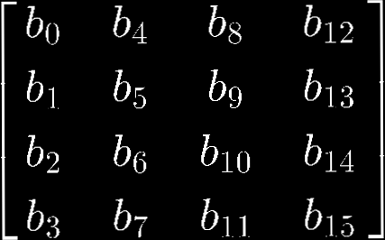
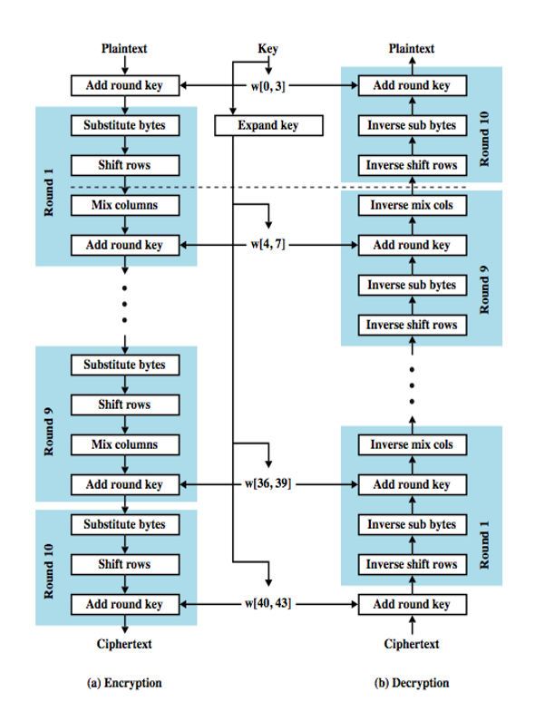

Description of the cipher
The Advanced Encryption Standard (AES), also known by its original name Rijndael is a specification for the encryption of electronic data established by the U.S. National Institute of Standards and Technology (NIST) in 2001.
AES is based on a design principle known as a substitution-permutation network, a combination of both substitution and permutation, and is fast in both software and hardware.Unlike its predecessor DES, AES does not use a Feistel network. AES is a variant of Rijndael which has a fixed block size of 128 bits, and a key size of 128, 192, or 256 bits. By contrast, the Rijndael specification per se is specified with block and key sizes that may be any multiple of 32 bits, with a minimum of 128 and a maximum of 256 bits.
AES operates on a 4 × 4 column-major order matrix of bytes, termed the state, although some versions of Rijndael have a larger block size and have additional columns in the state. Most AES calculations are done in a particular finite field.
For instance, if there are 16 bytes, b0,b1...b15, these bytes are represented as this matrix:
The key size used for an AES cipher specifies the number of repetitions of transformation rounds that convert the input, called the plaintext, into the final output, called the ciphertext. The number of cycles of repetition are as follows:
- 10 cycles of repetition for 128-bit keys.
- 12 cycles of repetition for 192-bit keys.
- 14 cycles of repetition for 256-bit keys.
Each round consists of several processing steps, each containing four similar but different stages, including one that depends on the encryption key itself. A set of reverse rounds are applied to transform ciphertext back into the original plaintext using the same encryption key.
High-level description of the algorithm
- KeyExpansions—round keys are derived from the cipher key using Rijndael's key schedule. AES requires a separate 128-bit round key block for each round plus one more.
- InitialRound
- AddRoundKey—each byte of the state is combined with a block of the round key using bitwise xor.
- Rounds
- SubBytes—a non-linear substitution step where each byte is replaced with another according to a lookup table.
- ShiftRows—a transposition step where the last three rows of the state are shifted cyclically a certain number of steps.
- MixColumns—a mixing operation which operates on the columns of the state, combining the four bytes in each column.
- AddRoundKey
- Final Round (no MixColumns)
- SubBytes
- ShiftRows
- AddRoundKey.
History and usage
AES is a subset of the Rijndael cipher developed by two Belgian cryptographers, Vincent Rijmen and Joan Daemen, who submitted a proposal to NIST during the AES selection process. Rijndael is a family of ciphers with different key and block sizes.
For AES, NIST selected three members of the Rijndael family, each with a block size of 128 bits, but three different key lengths: 128, 192 and 256 bits.
AES has been adopted by the U.S. government and is now used worldwide. It supersedes the Data Encryption Standard (DES), which was published in 1977. The algorithm described by AES is a symmetric-key algorithm, meaning the same key is used for both encrypting and decrypting the data. In the United States, AES was announced by the NIST as U.S. FIPS PUB 197 (FIPS 197) on November 26, 2001.
AES became effective as a federal government standard on May 26, 2002, after approval by the Secretary of Commerce. AES is included in the ISO/IEC 18033-3 standard. AES is available in many different encryption packages, and is the first (and only) publicly accessible cipher approved by the National Security Agency (NSA) for top secret information when used in an NSA approved cryptographic module.
Security analysis
Until May 2009, the only successful published attacks against the full AES were side-channel attacks on some specific implementations. The National Security Agency (NSA) reviewed all the AES finalists, including Rijndael, and stated that all of them were secure enough for U.S. Government non-classified data.
AES has 10 rounds for 128-bit keys, 12 rounds for 192-bit keys, and 14 rounds for 256-bit keys.By 2006, the best known attacks were on 7 rounds for 128-bit keys, 8 rounds for 192-bit keys, and 9 rounds for 256-bit keys.